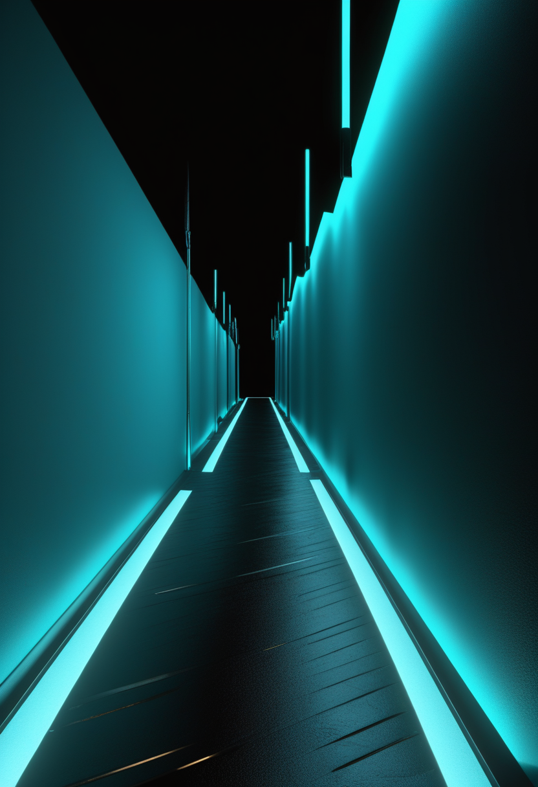
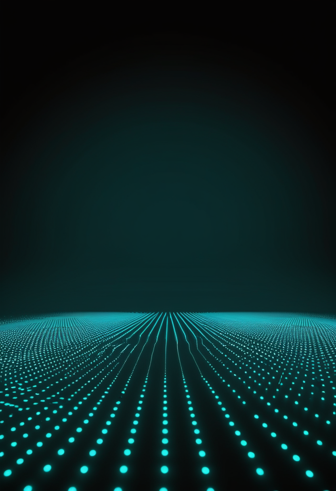
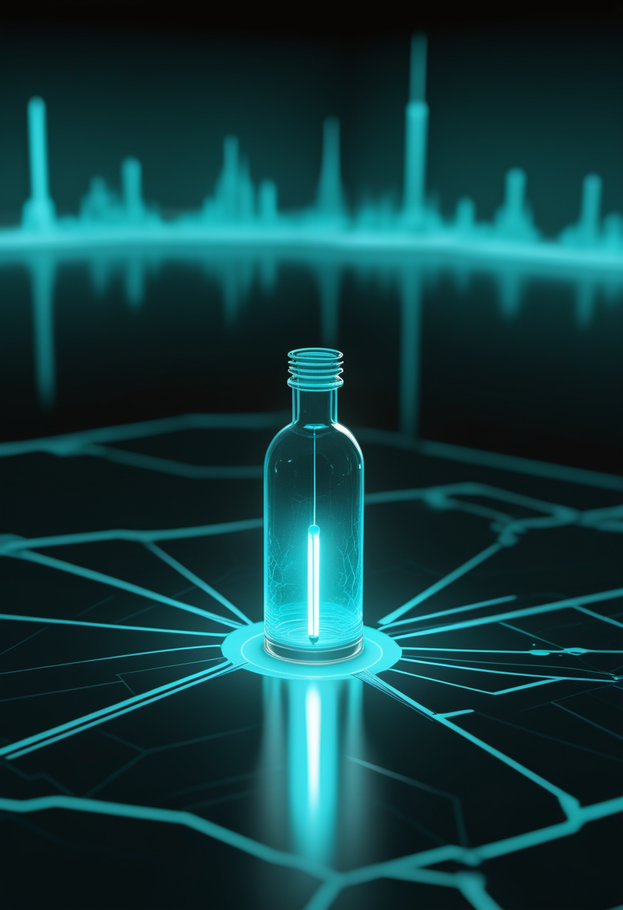
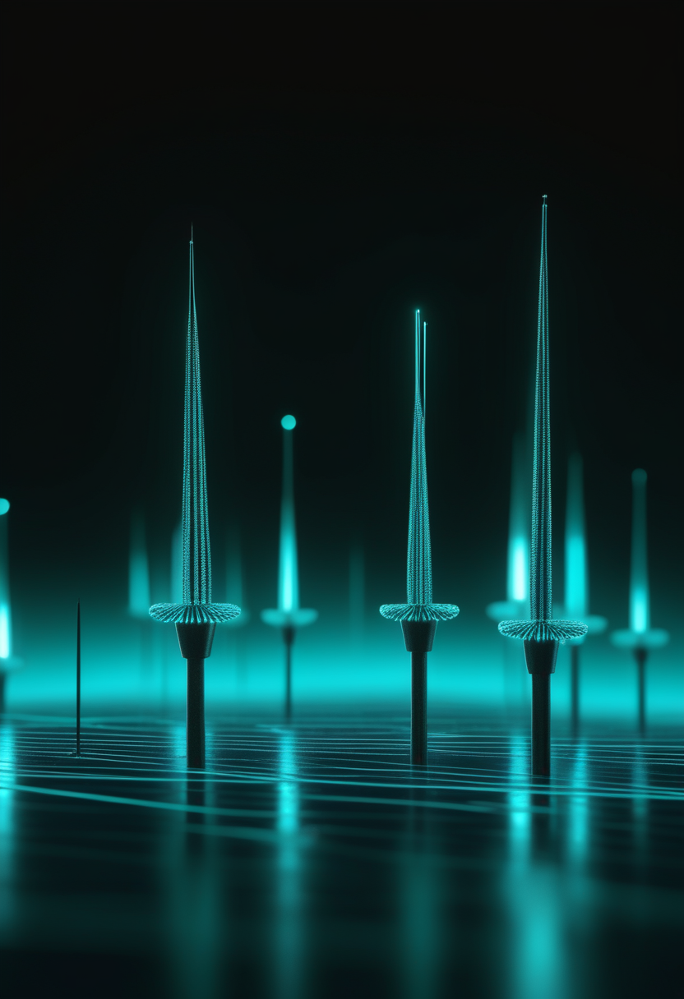

火曜日の便り。2026年のノーベル生理学・医学賞は、カール・ダイセロス氏(スタンフォード大)、ペーター・ヘーゲマン氏(ベルリン・フンボルト大)、ゲオルク・ナーゲル氏(ヴュルツブルク大)の3氏に贈られた。単細胞の藻が光に向かって泳ぐ仕組みを追った基礎研究が、脳の個々の神経細胞を光のパルスで自在にオン・オフできる技術「オプトジェネティクス」へとつながった、その歩みを自由の章で届ける。基盤の章では、ブンディブギョ型エボラに対するエルベボの交差防御を確かめる治験が、ついにブニアの医療従事者への接種で始まったことと、WHOが世界のコレラによる年間死者数が1999年以降で最多だったと報告したことを伝える。畏敬の章では、ESAの木星探査機JUICEが地球をスイングバイで加速させたことと、ジェイムズ・ウェッブ宇宙望遠鏡がビッグバン後わずか5億年の銀河に炭素や酸素を見つけたことを届ける。命の章では、Cure SMAが治療のない時代から10年を振り返る新キャンペーンを始めたことと、リスジプラムを使う成人の実臨床データが安定した経過を示したことを伝える。美の章では、9,700万年前の磁性化石に残る動物の「内蔵GPS」と、2億4,500万年前の海生爬虫類に残された胃と肝臓を取り上げる。
2026年のノーベル生理学・医学賞は、光を使って個々の神経細胞の働きをオン・オフする技術「オプトジェネティクス」の基礎を築いたカール・ダイセロス、ペーター・ヘーゲマン、ゲオルク・ナーゲルの3氏に贈られた。単細胞の藻がなぜ光に向かって泳ぐのかという素朴な問いから出発した研究が、脳の仕組みを調べる最も強力な道具の一つへと育った。詳細は「自由」の章で。

Cure SMAは10月1日、年末までの企画「This Gen, Next 10」を開始した。疾患修飾療法が存在しなかった時代をあらためて振り返り、治療を受けた世代が成人期に入り始めている現在の進捗と残された課題を棚卸しし、研究・政策・ケア体制それぞれで次の10年に何が必要かを見据える企画だという。本紙がこれまで伝えてきたISEMBYLDの承認やsalanersenの第3相といった個々の進展を、10年という単位の物語の中に置き直す試みにあたる。

第4相実臨床研究WeSMA(NCT05232929)の成人コホート(全体の42.2%を占める)について、12か月時点のデータが10月1日に公表された。対象の多くは6か月以上リスジプラムを使用中のII型・III型で、平均2.5年のヌシネルセン使用歴を持つ。運動機能の指標はおおむね安定(HFMSEは平均-0.9点、RULMは平均±0で変化なし)し、臨床全般印象(CGI-C)では新規処方群・継続群のいずれも約半数が改善、大半は安定、悪化は少数だった。有害事象は46.5%(重篤18.2%、治療関連4.7%)で、治験薬中止は1.8%。承認の新しさが続く中、実際に使い続けている成人でどうなっているかを示す地味だが重要なデータになる。
次の10年を語る企画と、今まさに薬を使い続けている人たちの安定したデータは、同じことの両面である。見据える未来と、積み上げている現在は、どちらも欠けると意味をなさない。
スウェーデン・ノーベル委員会は10月5日、2026年の生理学・医学賞を、光で神経細胞の活動を直接操る技術「オプトジェネティクス」の基礎を築いたカール・ダイセロス(スタンフォード大)、ペーター・ヘーゲマン(ベルリン・フンボルト大)、ゲオルク・ナーゲル(ヴュルツブルク大)の3氏に贈ると発表した。出発点は1990年代初め、マックス・プランク研究所でのヘーゲマンの問いだった ― 単細胞の緑藻クラミドモナスはなぜ光に向かって泳ぐのか。ナーゲルとの共同研究で、光を受けると瞬時に開く細胞膜のイオンチャネル「チャネルロドプシン」がその答えであることを突き止めた。ダイセロスはこの発見を哺乳類のニューロンに応用し、光パルス一つで特定の神経細胞だけをオン・オフできる手法へと仕上げた。脳のどの回路が何を引き起こすのかを、観察するだけでなく実際に操作して確かめられるようになったことで、神経科学の実験の組み立て方そのものが変わった。本紙がこれまで伝えてきたNeuralinkやSynchronなどの神経インタフェースは電気信号を読み書きする方向の技術だが、オプトジェネティクスは光で書き込む方向の技術であり、両者が今後どう組み合わさるかは次の焦点になる。
電気で読み書きする脳インタフェースの話を、本紙はこれまで何度も届けてきた。今日はその土台にある、光で書き込むという別の道の話である。視線入力や侵襲型BCIの直近1〜2週の新規一次情報は、今回は確認できなかった。

コンゴ民主共和国(DRC)のブンディブギョ型エボラ流行に対し、ザイール型向けに承認済みのワクチン『エルベボ(Ervebo)』が交差防御を示すかを確かめる治験が始まった。週末にかけてイトゥリ州ブニアの医療従事者が最初に接種を受けたという。WHOがDRCへ送った7万回分のうち、2万回分は確認された患者の接触者を対象にした研究用(コンパッショネート・ユースの枠内)に、5万回分は最前線対応者への一般的な予防接種に充てられる。エルベボはブンディブギョ型への交差防御を示唆する免疫学的データと動物実験はあるが、ヒトでの臨床的な防御はまだ証明されていない。並行して、ブンディブギョ型を直接標的とするモデルナの実験的ワクチンmRNA-1469も、8月からカナダで健康成人80人を対象にした第1相を継続中である。
WHOは9月29日、コレラ・髄膜炎・ペストに関する最新の世界動向を公表した。2025年の世界のコレラは確定45万1,499例・死亡7,870人で、年間死者数としては1999年以降で最も多かった。アンゴラ・バングラデシュ・コンゴ民主共和国・ナイジェリア・南スーダン・スーダン・イエメンの7か国が世界の症例・死者の約9割を占め、中でもWHOアフリカ地域の負担が最大で、前年比で症例が34%、死者が58%増えた。ナイジェリアでは2026年1月以降だけで5万例超・338人の死者が報告されている。報告された死者のうち5人に1人超が医療機関の外で亡くなっており、治療が届く前に命を落とす人の多さが指摘されている。
一つの流行には、長い遅れを経てようやくワクチン治験という対抗手段が届いた。その同じ世界で、コレラという古くからの病が記録的な死者を出し続けている。進歩は一つの場所に集中し、別の場所ではまだ足りない。
ESAの木星氷衛星探査機JUICEは9月28日、地球をスイングバイに利用して木星への軌道を整えた。インド洋上空わずか8,640kmを通過し、地球の重力を使って速度を秒速3.5km変化させ、軌道を20度屈曲させた。燃料をほとんど使わずに速度と方向を変える重力アシストの典型例で、2023年の打ち上げ以来、2025年8月の金星フライバイに続く節目となる。2029年に再び地球をスイングバイし、2031年の木星到着を目指す。最終目標は、地下に海を持つとされるエウロパ・ガニメデ・カリストという3つの氷衛星の探査である。
アリゾナ大学のYongda Zhu氏らの研究チームは、ジェイムズ・ウェッブ宇宙望遠鏡(JWST)が観測した、ビッグバン後わずか5億年という時代の3つの銀河のスペクトルから、炭素・酸素・ケイ素による吸収の痕跡を検出したと発表した。初期の銀河は水素とヘリウムだけで構成されていたはずだという従来の想定に反し、宇宙最初期からすでに重元素が外側へ広がっていたことを示す結果だという。金属を含むガスは水素・ヘリウムだけのガスより急速に冷えるため、より早い段階で小さく安定した星が生まれ、岩石質の微粒子が凝縮できるようになる。銀河がどれだけ早く「成熟」できたかという宇宙の年表そのものが、前倒しになる可能性がある。論文はNature Astronomyに掲載された。
JUICEは重力という目に見えない力を借りて進路を変え、JWSTは5億年という時の彼方からの光に残された元素の指紋を読んだ。どちらも、直接触れられないものを、別の何かの痕跡から読み解く仕事である。

ケンブリッジ大学とヘルムホルツ・ツェントルム・ベルリンの研究チームは、9,700万年前の海底堆積物に保存された微小な磁性化石(マグネトファシル)の中に、動物が地磁気を使って方位を知るための最古の証拠を見つけたと発表した。槍の先・紡錘・弾丸・針のような形をした構造体で、どれも細菌一個ほどの大きさしかない。研究チームは初めてこの化石の磁気構造を3次元で撮影し、地磁気の方向と強さの両方を検知できるよう最適化された形状であることを明らかにした。どの生物がこれを作ったのかはまだ分かっていないが、鳥や魚が今も使う磁気受容という能力が、どれだけ古くから存在していたかを示す直接の物証になる。
中国・欧州・米国の国際研究チームは、中国雲南省羅平のGuanling層(三畳紀、かつてのテチス海東部にあたる)から見つかった長い首を持つ小型の海生爬虫類『Austronaga minuta』の化石に、胃・肝臓・腸を含む消化器系がほぼ完全な形で保存されていたと報告した。爬虫類としては現時点で最古級の内臓化石だという。前部には袋状の大きな胃があり、鮮やかな赤色を保つ肝臓からはヘモグロビンの痕跡も検出された。消化器系そのものは単純な構造だったが、骨格は泳ぐことに高度に適応していたことが確認され、恐竜時代の海を泳いだ生き物の『中身』が2億4,500万年の時を超えて読めるようになった。
9,700万年前の方位感覚と2億4,500万年前の内臓は、どちらも『残るはずがなかったもの』が残った例である。測る解像度が上がるたびに、遠い過去の生き物の仕組みそのものが少しずつ見えてくる。
火曜日の便り。2026年のノーベル生理学・医学賞は、光で神経細胞を操る技術『オプトジェネティクス』を築いたダイセロス・ヘーゲマン・ナーゲルの3氏に贈られた。基盤の章では、ブンディブギョ型エボラのワクチン治験がついにブニアで始まったことと、世界のコレラ死者が1999年以降で最多だったというWHOの報告を届けた。畏敬の章では、ESAのJUICEが地球をスイングバイで加速させたことと、JWSTがビッグバン後5億年の銀河に重元素を見つけたことを紹介した。命の章では、Cure SMAの新キャンペーンと、リスジプラムを使う成人の安定した実臨床データを伝えた。美の章では、9,700万年前の磁性化石に残る方位感覚と、2億4,500万年前の海生爬虫類に残された内臓を取り上げた。
では、また明日の朝に。 — JaH